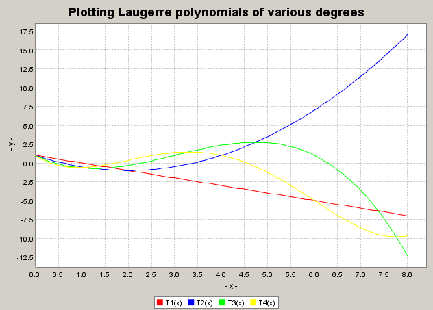

|
RautSoft Economics and Business Numerics | |||||||
| PREV PACKAGE NEXT PACKAGE | FRAMES NO FRAMES | |||||||
See:
Description
| Class Summary | |
|---|---|
| JFreeChartPanel | Plots on a ChartPanel one or more functions of one variable. |
| RautSoftChart | RautSoft Plot package provides various charts and plotting methods. |
This package contains two classes to plot chart and graphs of functions redefined and modified from JfreeChart.
import java.util.*;
import static RautSoft.util.RautSoftUtil.*;
import static RautSoft.plot.RautSoftChart.*;
import RautSoft.Interfaces.*;
import static RautSoft.math.functions.Orthopoly.*;
public class RautSoftChartEX {
public static void main(String[] args){
FunctionOfOneVariable f = new FunctionOfOneVariable() {
public double value(double x){return x*x;} };
plotLegend = "f(x)= x*x";
plot(f , -2.0,2.0);
FunctionOfOneVariable f0 = new FunctionOfOneVariable() {
public double value(double x){return L(1,x);} };
FunctionOfOneVariable f1 = new FunctionOfOneVariable() {
public double value(double x){return L(2,x);} };
FunctionOfOneVariable f2 = new FunctionOfOneVariable() {
public double value(double x){return L(3,x);} };
FunctionOfOneVariable f3 = new FunctionOfOneVariable() {
public double value(double x){return L(4,x);} };
FunctionOfOneVariable [] ff = new FunctionOfOneVariable[4];
ff[0] = f0;
ff[1]=f1;
ff[2] = f2;
ff[3]=f3;
double [] x0 ={0,0,0,0};
double [] x1 ={8.0,8.0,8.0,8.0};
String [] legends= {"T1(x)", "T2(x)", "T3(x)", "T4(x)"};
plotTitle = "Plotting Laugerre polynomials of various degrees";
plot(ff,x0,x1, legends);
}
}
FunctionOfOneVariable f = new FunctionOfOneVariable() {
public double value(double x){return x*x;} };
plotLegend = "f(x)= x*x";
plot(f , -2.0,2.0);

RautSoftChart,
JFreeChartPanel
|
RautSoft Economics and Business Numerics | |||||||
| PREV PACKAGE NEXT PACKAGE | FRAMES NO FRAMES | |||||||